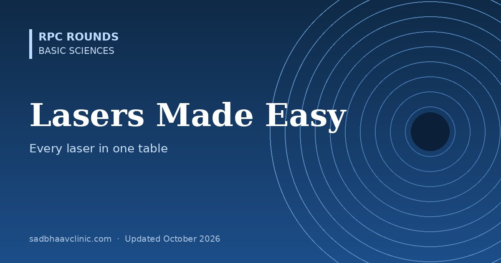

Last updated: October 2026
Ophthalmic lasers seem like a zoo of names and wavelengths. Two questions sort them all: how long and how hard does the laser hit (which decides what it does to tissue) and which colour it is (which decides what absorbs it).
| Laser | Wavelength | Mechanism | Main uses |
|---|---|---|---|
| Argon (blue-green / green) | 488 / 514 nm | Photocoagulation | PRP, focal laser, ALT, iridoplasty (largely replaced by 532 nm) |
| Frequency-doubled Nd:YAG | 532 nm | Photocoagulation; Q-switched for SLT | PRP, focal and grid, retinopexy; SLT |
| Yellow (dye or solid-state) | 577 nm | Photocoagulation | Macular work: haemoglobin absorbs it well, xanthophyll hardly at all |
| Krypton red | 647 nm | Photocoagulation | Through cataract or vitreous haemorrhage; less absorbed by blood |
| Diode | 810 nm | Photocoagulation (deep) | Transscleral cyclophotocoagulation, ROP, micropulse, TTT |
| Nd:YAG (Q-switched) | 1064 nm | Photodisruption | Posterior capsulotomy, peripheral iridotomy, vitreolysis |
| Femtosecond | ≈1053 nm | Photodisruption (tiny bubbles) | LASIK flaps, SMILE, laser-assisted cataract surgery, keratoplasty cuts |
| Excimer (ArF) | 193 nm | Photoablation | PRK, LASIK, PTK |
| Diode for PDT | 689 nm | Photochemical (verteporfin) | Polypoidal choroidal vasculopathy, chronic CSCR |
| UVA (not a laser) | 365–370 nm | Photochemical (riboflavin) | Corneal cross-linking |
Memory hook: Cook, Cut, Carve, Chemistry: coagulation (argon, 532, diode), cutting by plasma (Nd:YAG, femto), carving by UV (excimer), chemistry (PDT, cross-linking).
| Procedure | Laser | Key settings and points |
|---|---|---|
| Panretinal photocoagulation | 532 nm or 577 nm (or pattern lasers) | Moderate grey-white burns one burn-width apart, sparing the macula and disc; destroys ischaemic retina so VEGF falls. Effective spot size depends on the contact lens magnification |
| Focal / grid macular laser | 532 or 577 nm, or subthreshold micropulse | Light burns to leaking microaneurysms (modified ETDRS); now mostly after or with anti-VEGF |
| Selective laser trabeculoplasty | Q-switched 532 nm, 3 ns, 400 µm spot | Targets pigmented trabecular cells only (selective photothermolysis); first-line option (LiGHT trial); repeatable |
| Argon laser trabeculoplasty | Argon, 50 µm, 0.1 s | Thermal scarring of the meshwork; largely replaced by SLT |
| Peripheral iridotomy | Nd:YAG (± argon or 532 first in thick brown irides) | Usually superior or temporal; watch for IOP spike, bleeding, dysphotopsia |
| Posterior capsulotomy | Nd:YAG, about 1–2 mJ per shot | Focus just behind the capsule; risks: IOP spike, IOL pitting, CME, retinal detachment (higher in high myopes) |
| Laser retinopexy | 532 nm or diode | Two to three rows of confluent burns around a tear; scar becomes strong in about 2 weeks |
| ROP treatment | Diode 810 or 532 nm | Near-confluent laser to avascular peripheral retina (ETROP type 1); anti-VEGF is an alternative |
| Cyclophotocoagulation | Diode 810 (transscleral, continuous or micropulse); endoscopic | Reduces aqueous production; for refractory glaucoma |
| Photodynamic therapy | 689 nm with IV verteporfin | Standard fluence for PCV; half-dose or half-fluence for chronic CSCR |
Where residents slip
Related: Basic sciences hub, Glaucoma hub, Refractive surgery for residents, Clinical optics made easy.
📘 Want more exam-ready material? See Most Commons in Ophthalmology on Kindle, or browse all my books.
Looking for an eye specialist in Ahmedabad? Learn about our Eye Department or book a consultation with Dr. Dhaval Patel.